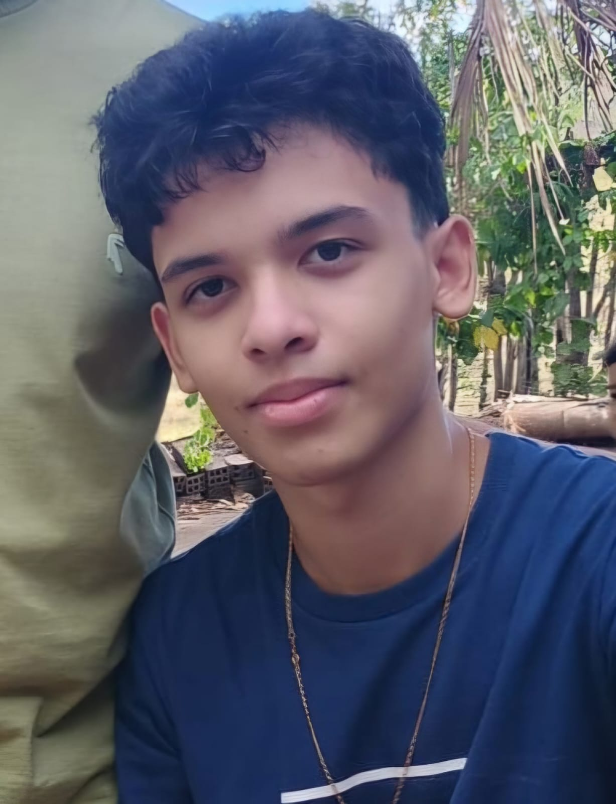

Telefone: 82 98749-1148
Email: dml6@aluno.ifal.edu.br
23/08/2010
Sou um iniciante em desenvolvimento web, tenho interesse nessa área e meu objetivo é me tornar um desenvolvedor profissional. Gosto de jogos, assistir vídeos e passar tempo com amigos.
Estou cursando técnico em informática, onde aprendo sobre programação, desenvolvimento de sistemas e tecnologia em geral.
Acesse o site do IFAL para saber mais: Clique aqui